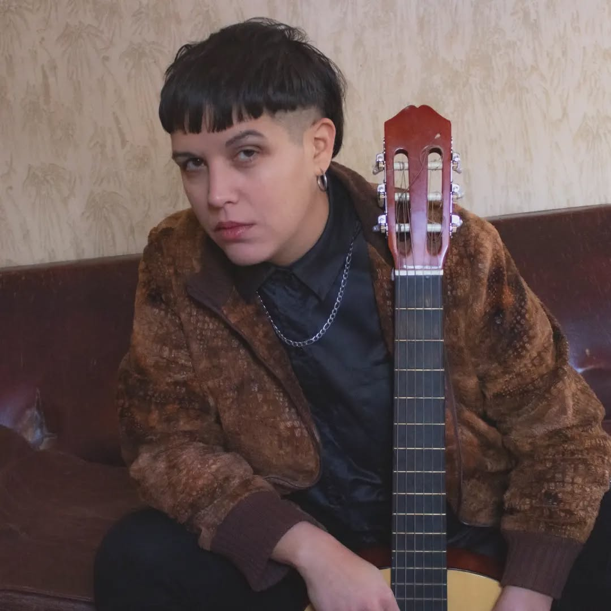

Compositora · Guitarrista · Cantante · Productora
Camila López es una artista lesbiana, cantautora, guitarrista y cantante que aborda la música a partir de dos cualidades que en su caso no se escinde: la precisión y la sangre. Plantea un estilo ecléctico propio, con un lirismo cuidado, a través de la cadencia de una guitarra y una voz que emergen de diferentes raíces: un ineludible bagaje de rock, la música folklórica argentina, sin rehuirle a otras variantes musicales con las que se permite experimentar, tales como el sonido jazzy. Con el formato canción como norte, ha transitado estos géneros diversos logrando una propuesta de hibridación.
Escuchar nuevo discoSu cuarto disco solista alcanza un gran nivel de madurez compositiva y lírica. Entrega 8 canciones atravesando diversos géneros, desde un rock que se evidencia en "Dopamina Hit" y "Devastación" (sin abandonar organicidad e intimidad) a una balada de cierre como "Siempre vertido".
Conviven la suavidad de un violoncello y guitarras acústicas, con pianos eléctricos y baterías, con una voz de a momentos visceral y de a momentos aterciopelada.
La producción, grabación y los arreglos estuvieron íntegramente a cargo de la artista.
La obra se hace eco de la época contemporánea: una burla a la caricatura de los seres digitales y adictxs en lxs que nos hemos convertido, pero como contracara, ofrece una propuesta de retornar al tacto y la poesía.
Nació en Buenos Aires, Capital Federal. Comenzó a tocar el teclado a los 11, a los 18 tomó clases de piano y a partir de los 20 decidió adentrarse en la guitarra y la composición. Es también técnica en grabación y postproducción musical, lo que le permitió producir y editar su material. Actualmente está terminando su formación como música popular en la Tecnicatura de Música Popular (UNLP – Madres de Plaza de Mayo).